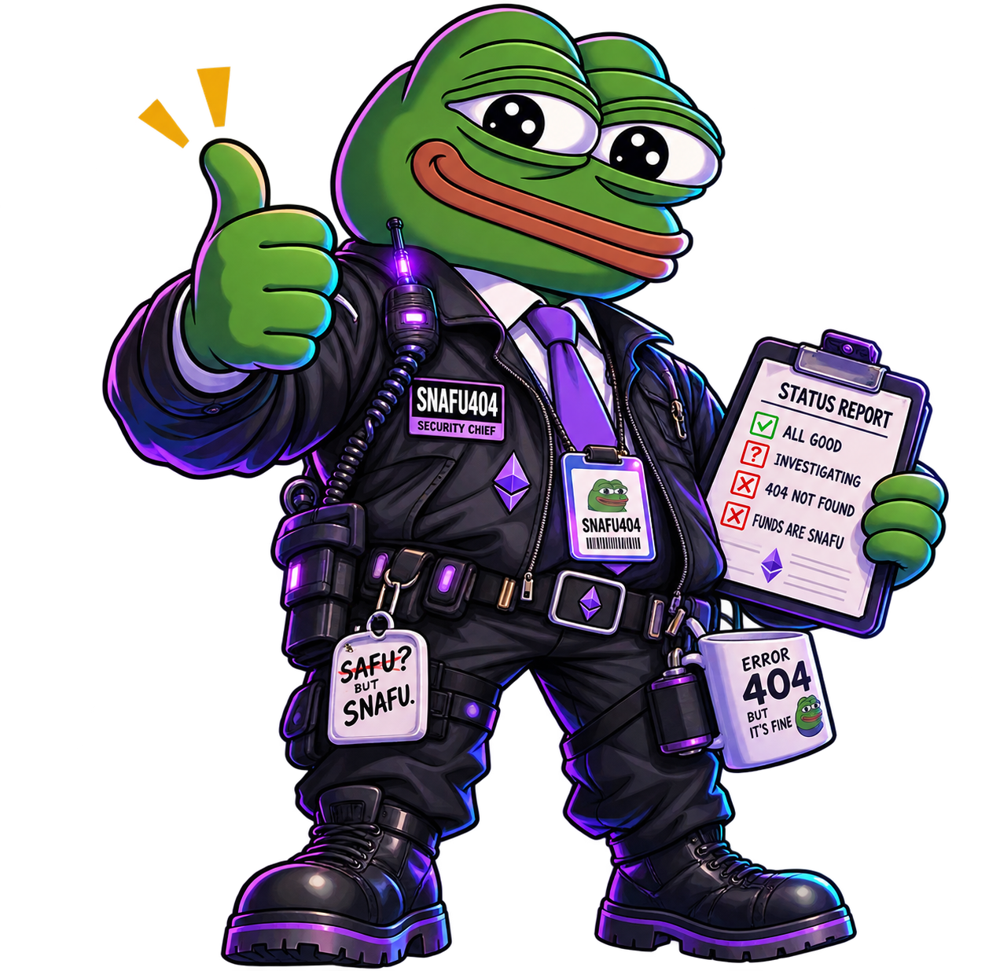
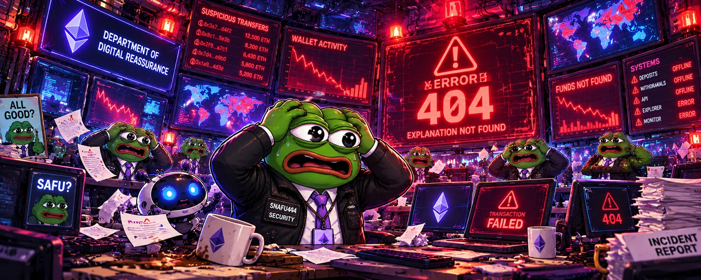
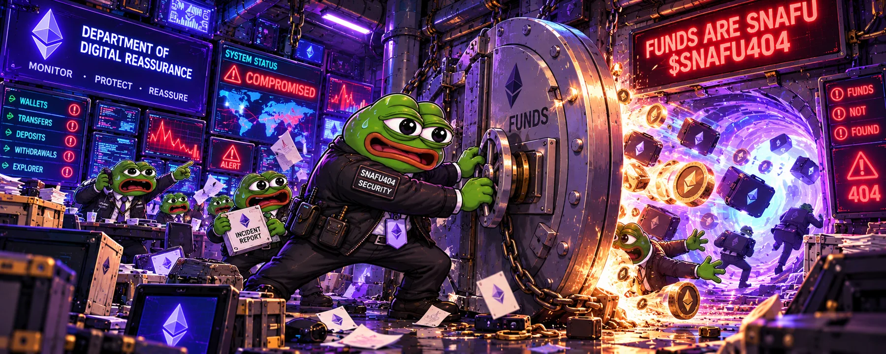
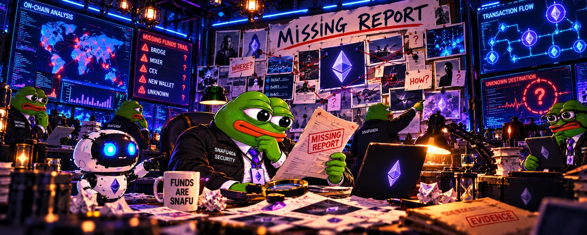
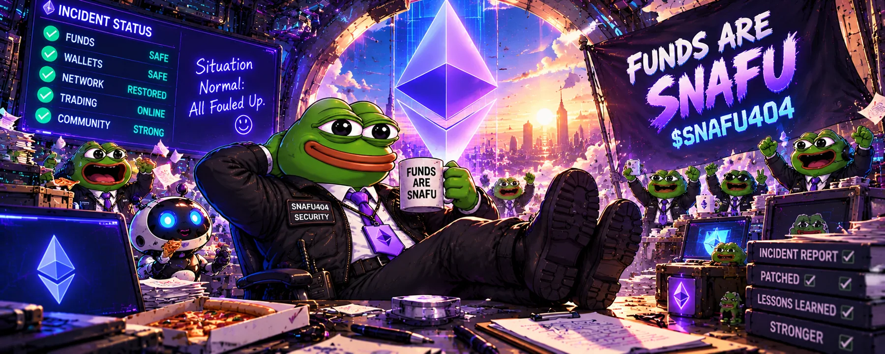
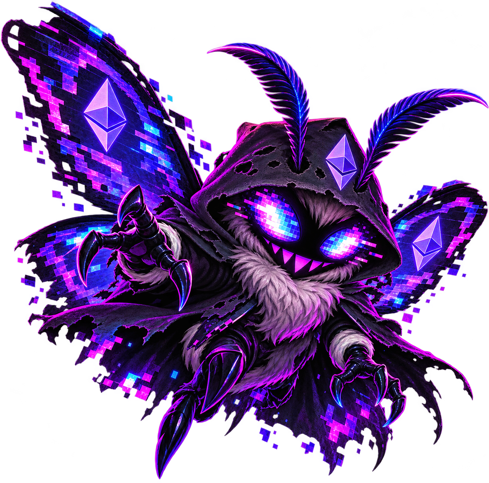
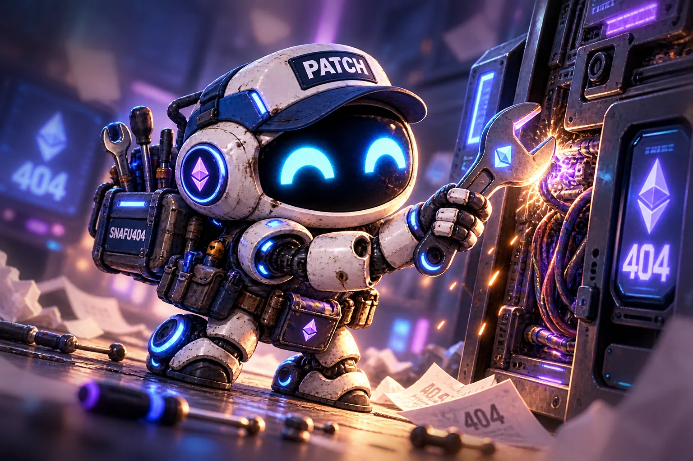

01 / BEFORE THE ERROR
ALL SYSTEMS NORMAL
Every dashboard shines green. Security Chief Pepe holds up a clipboard, the team celebrates, and nobody notices the tiny warning blinking behind the desk.
● ALL GOOD (APPARENTLY)INCIDENT #404 • ETHEREUM MAINNET
$SNAFU404
STATUS: ALL GOOD. REALITY: 404.
A security department. One extremely confident frog. An absolutely catastrophic status page. Welcome to the incident.

[ FILE 001 / THE STORY ]
At the Department of Digital Reassurance, green checkmarks are a lifestyle. Follow the fictional incident that made Chief Pepe legendary.
Every dashboard shines green. Security Chief Pepe holds up a clipboard, the team celebrates, and nobody notices the tiny warning blinking behind the desk.
● ALL GOOD (APPARENTLY)
A monitor freezes, then another. The entire fictional department tries to understand an error message nobody expected: EXPLANATION NOT FOUND.
▲ INVESTIGATING...
The press statement is ready. The systems are not. Chief Pepe attempts to control the chaos as alarms erupt behind the scenes.
▲ ERROR 404
Turns out that deleting the warning doesn't remove the problem. Chief Pepe finally opens a real investigation. Naturally, even the incident report has vanished.
◆ REPORT NOT FOUND
A green status light is not the same as an explanation. But the story survives as a ridiculous Ethereum meme about misplaced confidence and endless error messages.
● STILL A MEME[ PERSONNEL RECORDS ]
The most questionably qualified staff in the history of fictional crypto cybersecurity.
Chief of Security. Expert in smiling through an emergency. Believes every problem can be solved with a thumbs-up and another coffee.
The endlessly cheerful robot responsible for reassuring absolutely everybody, even when its own display blinks 404.

Attracted to error lights. Knows exactly where the missing files went, but is too busy causing pixelated trouble to say.

The only one with a wrench. Constantly fixes broken servers while everyone else debates the wording of the status update.
[ CLASSIFIED / NOT REALLY ]
A visual archive of fictional security mishaps. Click any scene for a larger view.
[ TRANSPARENCY / REAL TOKEN DATA ]
Unlike our fictional status page, these are the intended Ethereum token settings. Confirm launch details independently on chain.
LP lock is an intention, not evidence of a completed lock. No token address or official social links have been provided yet.
[ OPERATIONS MANUAL ]
Educational steps for after the token goes live on Ethereum. Always verify the official contract and pool.
Use a reputable Ethereum-compatible wallet and keep your recovery phrase private.
Have ETH on Ethereum mainnet for any purchase and network transaction fees.
Wait for the published address, check it against official channels, and inspect it on a block explorer.
Use the verified Uniswap pool, review the token and slippage, and understand the risks before confirming.
[ END OF INCIDENT / BEGINNING OF THE MEME ]
Follow the department when official community accounts are announced. No official X or Telegram URL has been supplied yet.